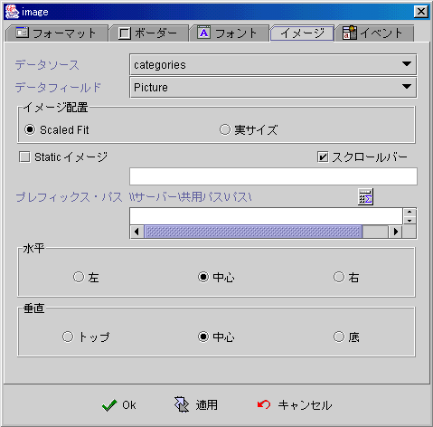
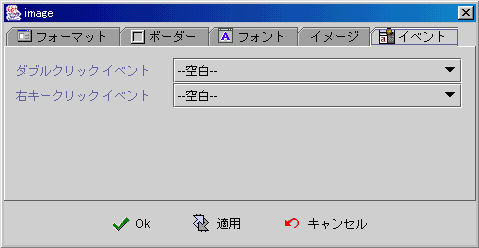

|

圖片元件 (Image component)
共同屬性 (common properties)
檔案名稱與前綴路徑
(file name and prefix path)
圖片屬性 (Image properties)
事件 (event)
更動顯示圖片(change
display image)
下載、更新圖檔
(download、upload image file)
運算式屬性存取
(formula get/set properties)
圖片元件
(Image component) ，使用於顯示 GIF、 JPG 圖檔格式 (image format)
的圖片 (image)，其中：
圖片的資料來源可以是
-
直接儲存於資料記錄中的
LONGVARBINARY 欄位型別的 JPG 圖檔格式的二進位圖片資料(image)
-
前綴路徑
(prefix path) 加上 儲存於資料記錄中的 VARCHAR
欄位型別的圖檔名稱 (image file name)
-
前綴路徑
(prefix path) 加上 直接指名的圖檔名稱 (image file name)
只有直接儲存於資料記錄中的
LONGVARBINARY 欄位型別的二進位圖片資料(image)，在連結的資料來源
(data source) 存檔時 (post)，異動的二進位圖片資料 (image) 會更新至資料欄位中
(data field)。使用檔案名稱 (file name)
做為圖檔來源，檔案內容的更新，必須透過 檔案上載與更新
的方式，進行實際的檔案內容更新。若只是改變資料記錄
(data field) 中的VARCHAR
欄位型別的檔案名稱，圖片元件 (Image component) 會在欄位值 (檔案名稱)
更新存檔後，自動下載該檔案，更新圖片元件的顯示，如果該檔案不存在則顯示空白。
檔案名稱與前綴路徑
(file name and prefix path)
圖片元件可以顯示
(display) 圖檔 (GIF、JPG) 的圖片 (image)，設計師或使用者必須以前綴路徑與檔案名稱，指定圖檔所在的位置，前綴路徑與檔案名稱所組合成的字串，也必須是一有效且符合 UNC (
Universal Naming Convention) 命名的檔案來源，才能正確顯示圖片。UNC
(Universal Naming Convention) 命名法則包含三部份：主機名稱或IP
(host name or ip)、分享路徑 (sharing path)、檔案路徑名稱 (file path
and name) 合組成\\SERVER\Sharing path\path\filename
的檔案來源位置。檔案的資料存取是由 jLIVE™ middleware
提供服務，所以在 jLIVE™ middleware
所在的主機，可以且允許存取的網路資源，皆可以當成圖片元件的檔案來源，因此網路管理師必須把要提供給系統或使用者存取的資源路徑，分享
(share)
存取權限給予jLIVE™ middleware 所在的主機。UNC
命名法則的主機名稱或IP (SERVER name or ip)
，設計師可以用運算式 的ApServerName()
或 ApServerIp() 取得 jLIVE™ middleware
主機，避免主機名稱或 IP
更換時程式須隨之更動。如果是存取使用者端的檔案資源，則直接以磁碟名
(driver) 加檔案路徑名稱 (file path
and name) 即可(例如：C:\\jlive\doc\hello.gif)，此時系統直接存取使用者端
(client) 的檔案資源，不經由 jLIVE™ middle ware，但是使用者端
(client) 必須在 JRE (Java Runtime Environment) 中授權 (grant)
程式模組存取本機的權限，才可正確顯示圖片。
圖片元件
(Image component) 的前綴路徑 (prefix path) 當設定的值為 ""
空字串時，圖片元件將其解譯為應用程式的 class\Preloadimage 或
class\Images 目錄，相關的檔案名稱會在這兩個目錄下搜尋。
▲Top
圖片屬性 (Image properties)
-
資料來源
(data source)：選取資料來源。
-
資料欄位
(data field)：選取資料欄位。圖片元件只能選取資料欄位型別為
VARCHAR 或LONGVARBINARY 的欄位，連結 VARCHAR
的欄位，將解譯為圖片檔案名稱 (image file name)；LONGVARBINARY
的欄位，將解譯為 JPG 格式的圖檔資料。
-
圖片擺設 (image layout)
-
靜態圖片 (static image)：檔案名稱。
-
捲軸 (scroll bar)：圖片
(image)
大於圖片元件時，是否出現捲軸。
-
前綴路徑 (prefix path) ：前綴路徑
加上 檔案名稱 所組成的
UNC (Universal Naming Convention) 字串為完整檔案來源。參閱 檔案名稱與前綴路徑
(file name and prefix path)。
-
水平 (horizontal)：圖片
(image)
在圖片元件中水平的位置。
-
左 (left)
-
中 (center)
-
右 (right)
-
垂直 (vertical)：圖片
(image) 在圖片元件中垂直的位置。
-
上 (top)
-
中 (center)
-
下 (bottom)

事件 (event)

▲Top
更動顯示圖片
(change
display image)
圖片元件
(Image component) 顯示的圖片 (image) 是以圖片內容置換 (replace)
的方式更新顯示，依連結圖檔來源之不同，使用者與設計師的操作如下：
-
直接儲存於資料記錄中的
LONGVARBINARY 欄位型別的 JPG 圖檔格式的二進位圖片資料(image)
使用者可以按滑鼠右鍵，以選單呼叫出圖檔選擇視窗，選取新的圖檔置換原始內容，相連結的資料來源
(data source) 存檔時，圖片元件會將圖片內容
以 JPG 圖檔格式，存入LONGVARBINARY
欄位中。設計師可以按需求下載圖檔更新圖片元件內容。參閱
下載、更新圖檔 (download, update image file) 。
-
前綴路徑
(prefix path) 加上儲存於資料記錄中的VARCHAR
欄位型別的圖檔名稱 (image file name)
更改
VARCHAR
欄位型別的欄位內含值(檔案名稱)時，相連結的資料來源
(data source) 存檔後，圖片元件會自動重新下載檔案。如果檔案名稱不變但圖檔內容已更動，設計師必須呼叫圖片更新(refresh)
或重新下載 (download) 圖檔，才能顯然正確圖片。參閱 下載、更新圖檔
(download, update image file) 。
-
前綴路徑
(prefix path) 加上 直接指名的圖檔名稱 (image file name)
執行期
(runtime)
動態的更動指名的圖檔名稱 (以下載圖檔方式)，圖片元件會下載指名的圖檔顯示。如果檔案名稱不變但圖檔內容已更動，設計師必須呼叫圖片更新
(refresh) 或重新下載 (download)圖檔，才能顯然正確圖片。參閱
下載、更新圖檔 (download, update image file) 。
▲Top
下載、更新圖檔
(download、update image file)
下載圖檔
(download)：
-
SetProp("圖片元件名稱",
"file", "檔案名稱")：只給定檔案名稱，檔案來源是圖片元件預設的前綴路徑加上"檔案名稱"，圖前綴路徑為空字串("")
時，搜尋應用程式的class\preloadimage 和 class\images。
-
SetProp("圖片元件名稱",
"uncfile", "UNC命名的檔案來源")：給定完整UNC
命名的檔案來源。
更新圖檔 (update)：
取得目前檔案來源名稱：
取得前綴路徑
(prefix path)：
圖片更新
(refresh)：
▲Top
運算式屬性存取
(formula get/set properties)
SetProp("元件名稱",
"屬性", 值) ：屬性設定。
SetProp("元件名稱",
"屬性", 值1, 值2)：屬性設定。
GetProp("元件名稱",
"屬性")：屬性讀取。
| Set
Properties |
| 屬性
(Properties) |
值1
(Value 1) |
值2
(Value 2) |
說明
(Descriptions) |
| enabled |
1 致能，0 失效 |
|
致能與失效。 |
| setfocus |
1 設定 Focus |
|
設定 Focus。 |
| visible |
1 顯示，0 隱藏 |
|
顯示與隱藏。 |
| repaint |
1 重繪，2
立即重繪 |
|
重繪。 |
| revalidate |
1 |
|
元件重整。 |
| file |
文字串 檔案名稱 |
|
以前綴路徑加上檔案名稱，下載檔案至圖片元件。 |
| uncfile |
UNC 檔案資源名稱 |
|
以UNC 檔案資源名稱，下載檔案至圖片元件。 |
| refresh |
1 |
|
重新下載，更新圖片內容。 |
| Get
Properties |
| 屬性
(Properties) |
傳回值
(Return value) |
說明 (Descriptions) |
| isenabled |
1 致能，0 失效 |
致能與失效。 |
| isvisible |
1 顯示，0 隱藏 |
顯示與隱藏。 |
| file |
UNC 檔案資源名稱 |
目前圖片元件連結的檔案資源名稱。 |
| prefix |
文字串 前綴路徑 |
圖片元件的前綴路徑。 |
▲Top
Copyright © 2001~
2004 Probe Technology . All Rights Reserved.
Questions, comments,
and suggestions to Service@probe.com.tw
|